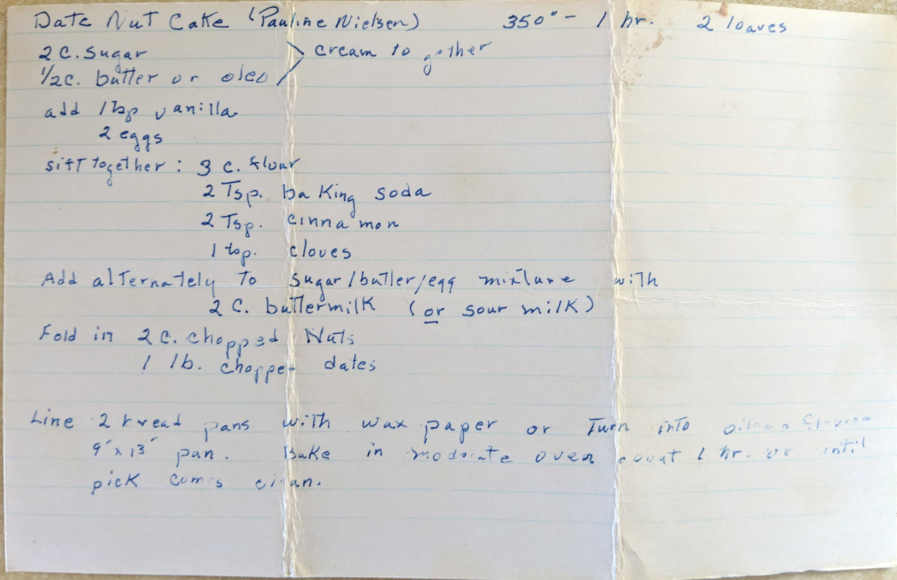

Date Nut Cake (Pauline Nielsen
350° - 1 hr. 2 loaves
2 C. Sugar
1/2 C. butter or oleo
cream together
add 1 tsp vanilla
2 eggs
sift together: 3 C. flour
2 Tsp. baking soda
2 Tsp. cinnamon
1 tsp. cloves
Add alternately to sugar/butter/egg mixture with 2 C. buttermilk (or sour milk)
Fold in 2 C. chopped nuts
1 lb. chopped dates
Line 2 heated pans with wax paper or turn into oiled and flavored 9'x13' pan. Bake in moderate oven
about 1 hr. or until pick comes clean.